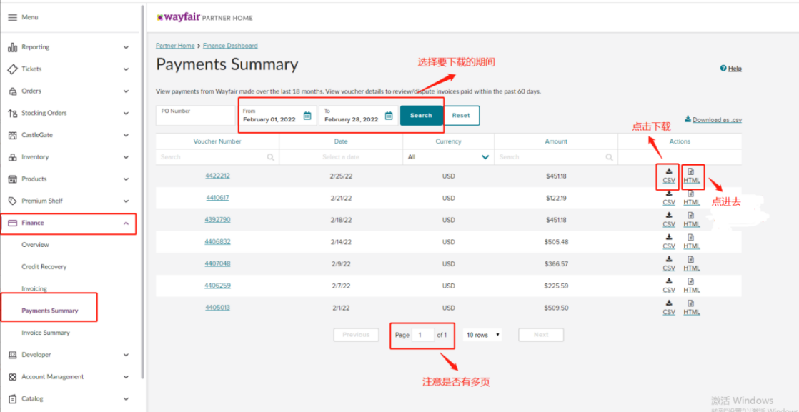
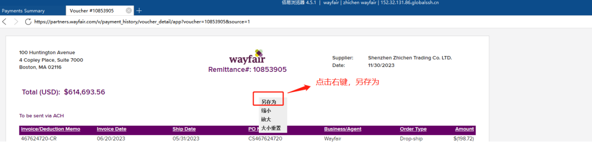
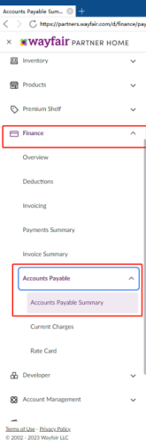
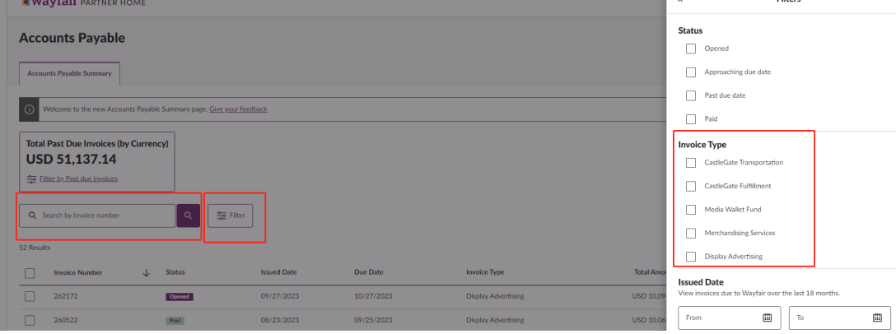
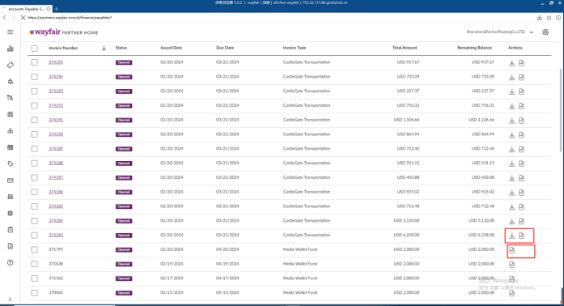

需求背景：财务需要下载账单以完成wayfair平台收入、费用、转款等会计核算；
1.wayfair月度结算明细、月度汇总
1.1数据爬取页面:（右上切换站点，所有站点均需下载）
wayfair后台 > Finance > Payments Summary



1.2数据爬取页面详细说明:
筛选条件：
①时间范围：日期框选择上一自然月到当前自然月整月；（如当前为2月，则选择日期范围：1-2月）
仅下载明细中Date为上一自然月的账单数据；
②点击右侧【CSV】按钮，下载并保存该账单；文件名含店铺+站点+订单号（即Voucher Number）；（月度结算明细）
③点击右侧【HTML】链接，打开链接后右键点击另存为保存图片，文件名含店铺+站点+订单号（即Voucher Number）；（月度汇总）
1.3频率说明:
每月2号上午09:00，定时爬取并存储至FTP；（每月2-5号晚上开始重爬账单）
2.wayfair发票清单（广告、头程运费、仓租费）
2.1数据爬取页面:
wayfair后台 > Fiance > Accounts Payable > Accounts Payable Summary


2.2数据爬取页面详细说明:
筛选条件：
①时间范围：点击Filter筛选日期（Issued Date）取上一自然月整月；
②将所选范围列表数据下载并保存为excel；
②点击下载和PDF按钮，分别下载并保存该账单明细及PDF文件，文件名含店铺+站点+发票号（即Invoice Number）
2.3频率说明:
每月2号上午 09:00，定时爬取并存储至FTP；（每月2-5号晚上开始重爬账单）
